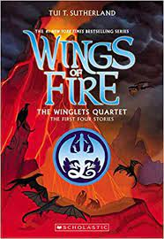

In the shadows of wings ... humans fight for survival
Ivy doesn't trust the Dragonslayer. He may be her father and the beloved
ruler of Valor, but she knows he's hiding more than the treasure from the sand
dragon he killed two decades ago.
Leaf doesn't trust dragons. They're the reason his favorite sister, Wren, is
dead, and now he'll do whatever it takes to slay every one.
Wren doesn't trust everyone. She swore off humans after her village
tried to sacrifice her to the dragons. She only has one friend, a small, wonderful
mountain dragon named Sky, and they don't need anyone else.
In a world of dragons, the humans who scramble around underfoot are easy
to overlook. But Ivy, Leaf, and Wren will each cross paths with dragons in
ways that could shape the destiny of both speicies. Is a new future possible
for all of them ... one in which humans can look to the skies with hope instead
of fear.
Legends of Darkstalker
Three dragons. One unavoidable destiny. This is the beginning ... of the end.
In the SeaWing kingdom, a young prince learns he is an animus, capable
of wonderful magic that comes with a terrible price
In the mind of a NightWing dragonet, a thousand futures untold - and almost
all of them, she knows, lead to disaster and destruction.
And under three full moons and the watchful eyes of his NightWing mother
and IceWing father, the most powerful dragon Pyrrhia will ever know is
clawing his way out of his egg: Darkstalker, the dragon who will change
the world forever.
Long before the SandWing war, lifetimes before the Dragonet
Prophecy ... darkness is born.
The Winglet Quartet: The First Four Four Stories
Everyone knows the stories ... but does anyone know the truth?
Fiercetooth, a NightWing obsessed with what could have - and
should have - been. Deathbringer, desperate to prove himself as
the next great NightWing assasin. Six-Claws, a loyal SandWing, who
will soon find that loyalty comes with a price. Foeslayer the NightWing, a
dragon-in-love turned kidnapper, and Prince Arctic of the IceWings, a
runaway turned captive.
In these four short stories, did deeper into the world of Pyrrhia to
discover what really happened.

In addition to the main books, there are the first
four books in graphic novel addition!